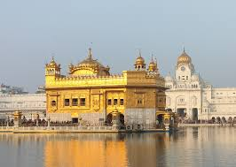

WORSHIP PLACES
ABOUT WORSHIP PLACES
A place of worship is a specially designed structure or space where individuals or a group of people such as a
congregation come to perform acts of devotion, veneration, or religious study. A building constructed or used for
this purpose is sometimes called a house of worship. Temples, churches, mosques, and synagogues are main examples of
structures created for worship. A monastery may serve both to house those belonging to religious orders and as a
place of worship for visitors. Natural or topographical features may also serve as places of worship, and are
considered holy or sacrosanct in some religions; the rituals associated with the Ganges river are an example in
Hinduism.
Under international humanitarian law and the Geneva Conventions, religious buildings are offered special protection,
similar to the protection guaranteed hospitals displaying the Red Cross or Red Crescent. These international laws of
war bar firing upon or from a religious building.
Religious architecture expresses the religious beliefs, aesthetic choices, and economic and technological capacity
of those who create or adapt it, and thus places of worship show great variety depending on time and place.
- HINDU
- JAIN
- SIKH
- ZOROASTRIAN
- ISLAM
TEMPLES
About Temples
Click on the Image to Know More
DERASAR
About Derasar
Click on the Image to Know More
GURUDWARA
About Gurugwara
Click on the Image to Know More

AGIYARI
About Agiyari
Click on the Image to Know More
MOSQUE
About Mosque
Click on the Image to Know More
Scan For Feedback